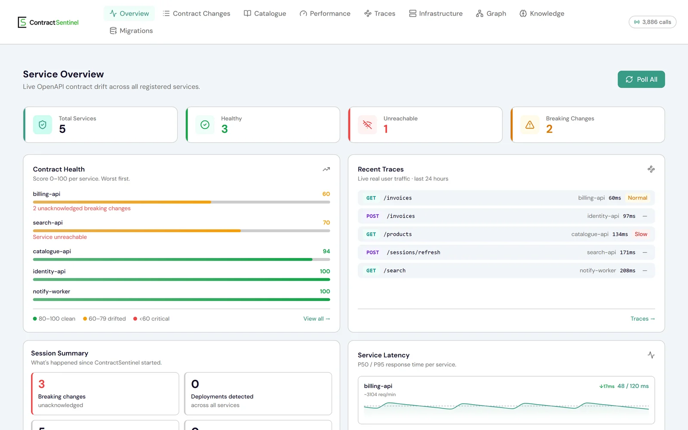
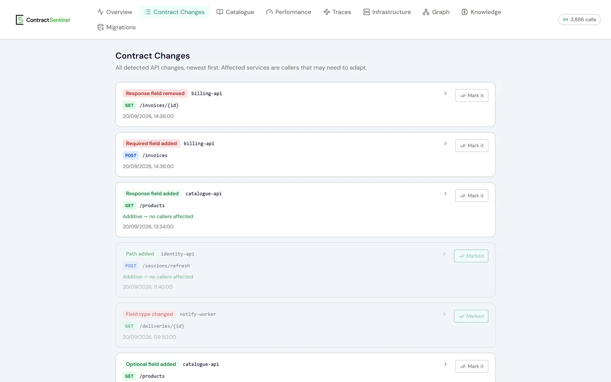
02 // BACKEND
Backend services, APIs, and business logic built around real systems.
03 // SYSTEMS
Understand the problem. Find the constraints.
Define the boundaries.
Decide what should exist.
What is actually the problem?
What can't I change?
Where should the boundaries be?
Who owns each decision?
What should know about what?
What happens when it fails?
How will I know it failed?
And only then, build.
04 // AUTOMATION
Repeated work
becomes a system.
Scheduled jobs, data pipelines, internal tools, AI-assisted workflows, retries, and observability.
The goal is simple.
Remove the repetition.


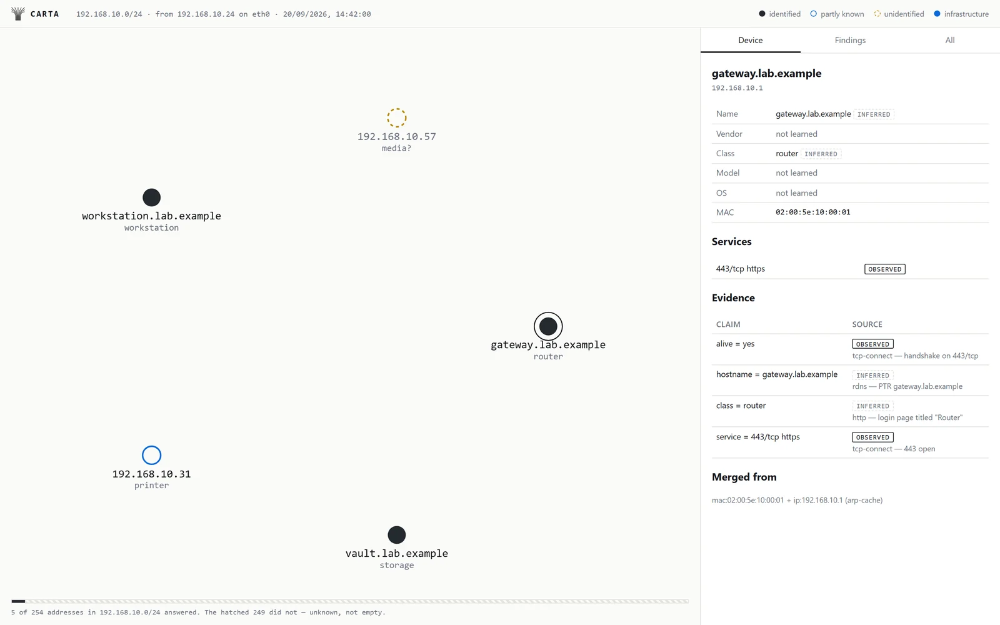
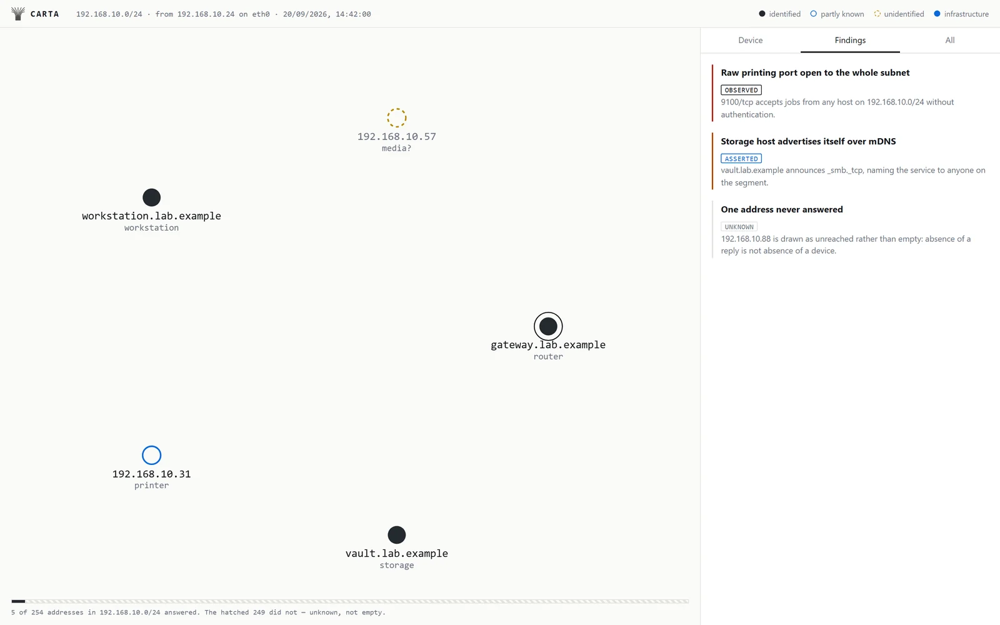
A workflow engine whose scheduler decides and never acts: it emits journal entries and commands, and the run's state is a fold of them. v1 runs branching, loops, retries and waits from the command line.
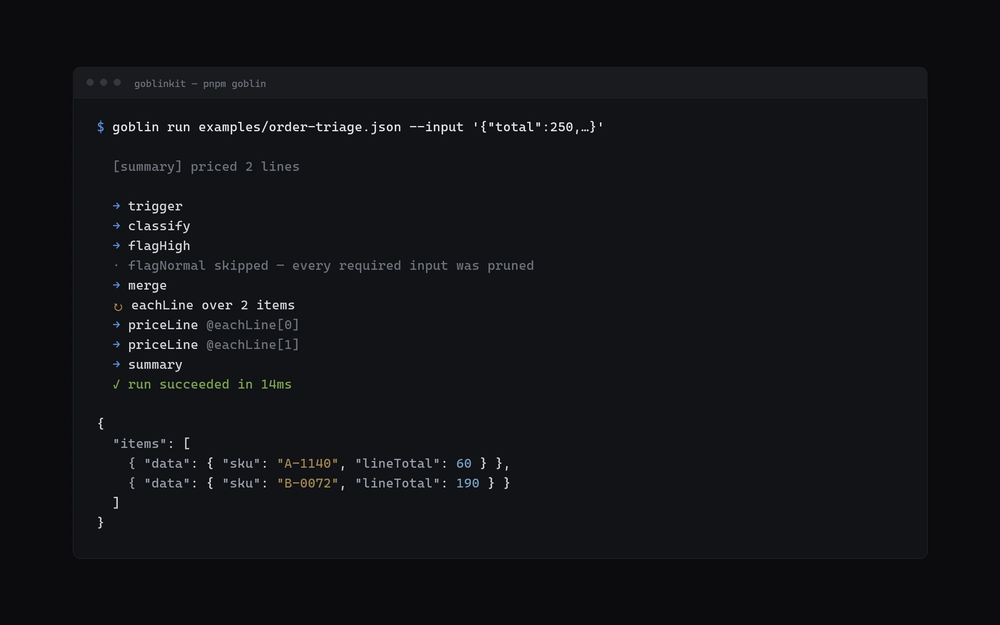
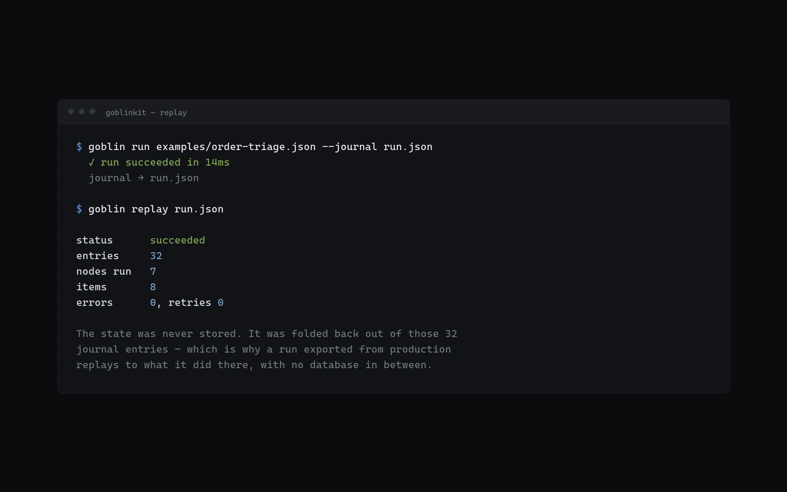
05 // EXPERIMENTS
Some ideas are worth
building just to find out.
Side projects, tools, interactive builds,
and unfinished ideas.
Some become products.
Some become lessons.
Some become something else.
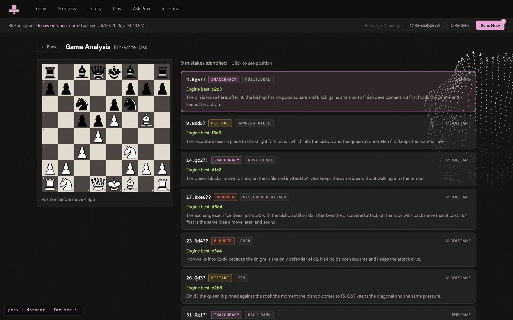
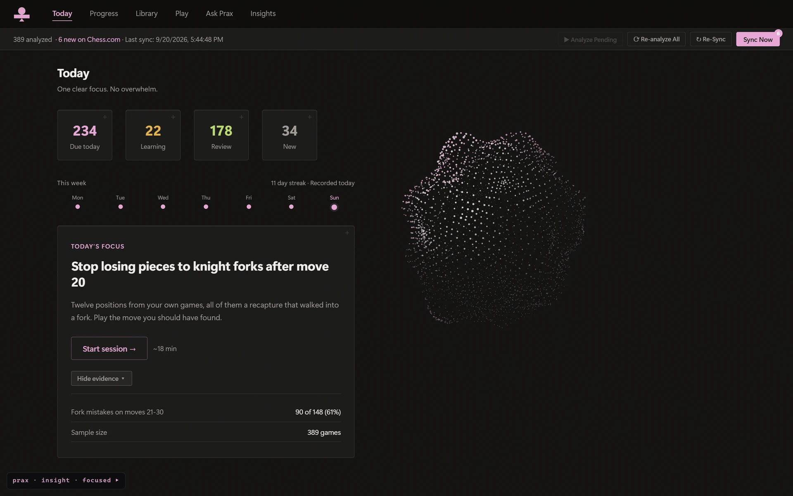
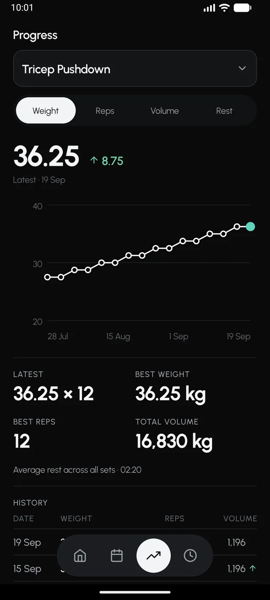
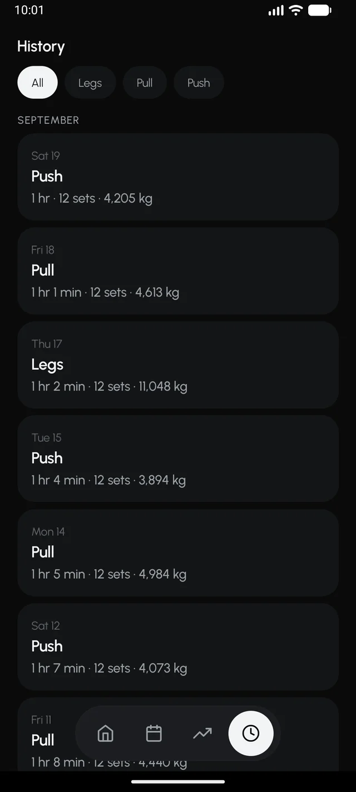
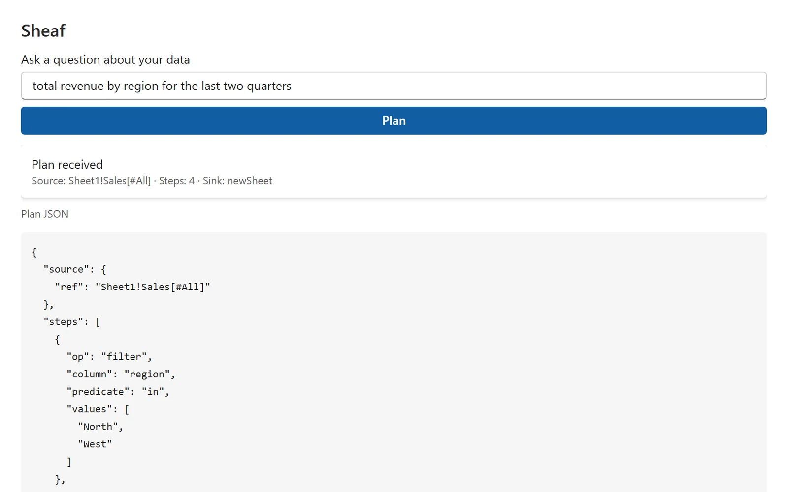
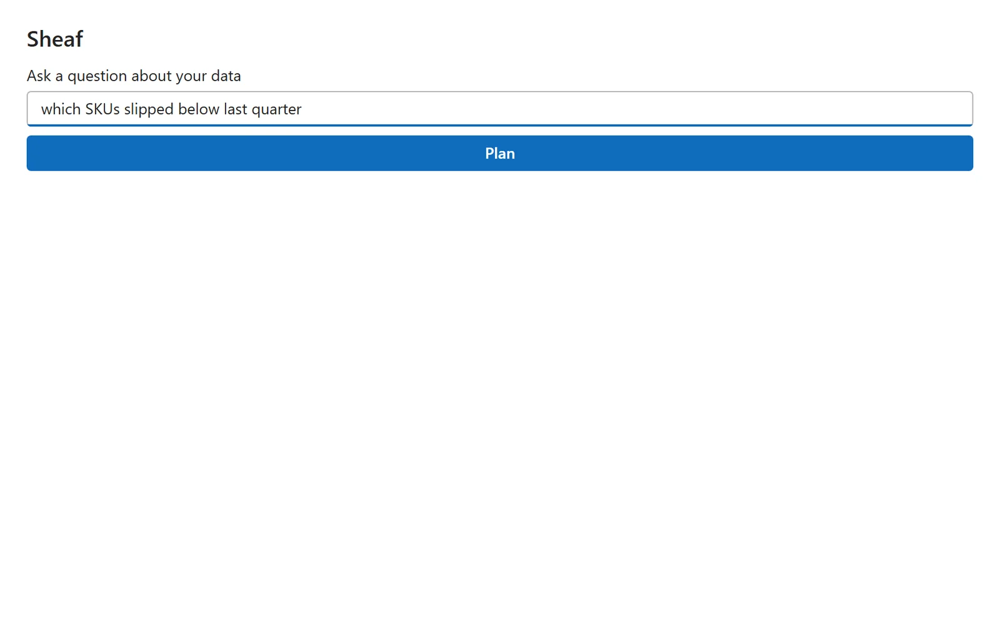
One schema file for a Spring Boot app: entities, Flyway migrations and a type-safe query metamodel generated from it, on top of Hibernate rather than instead of it.
v1 runs branching, loops, retries and waits from the command line. The editor and the queue are still design.
Encrypted database dumps, encoded as video noise and parked on an unlisted channel. An experiment in how far a storage medium can be misused.
01 Understand the system
before changing it.
02 Question the assumptions
before implementing them.
03 Build with context.
In that order.
TANMAY ANAND // SILLYWIZARD